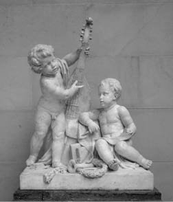

Biri müzisyen, biri ozan iki çocuk
Şiirleriyle ve ezgileriyle dillere destan Aryon (Arion), ozanlarıyla ünlü Lesbos (Midilli) adasında doğup büyüdü... Günün birinde de bir ezgi yarışmasına katılmak üzere Sicilya adasına gitti ve birinciliği alıp döndü. Ancak yaşadığı Lesbos adası bundan böyle dar gelmeye başladı ozana... O yüzden de sık sık komşu adalara gidip oralarda ezgilerini, şiirlerini büyük kalabalıklar önünde coşkuyla dillendirmeye başladı. Her gittiği yerde de büyük bir hayranlıkla karşılanıyor ve can kulağıyla dinleniyordu ezgileri. Müzisyen tanrı Apollon bile onun konserlerine gidiyor, hayranlık duygusuyla karışık büyük bir kıskançlıkla izliyordu onu...
İşte bu arada ozanımız, acımasızlığıyla ünlü Korintos kralı Peryandros'un (Periandros) da konser verme çağrısına olur deyip sarayına gitti. Aryon'un ezgilerine ve şiirlerine hayran kalan kral, onu artık sarayında yaşam boyu ağırlayacağını bildirdi. Bu öneriyi kabul eden Aryon, hem sarayda hem de ülke içinde çeşitli şölenler, konserler düzenlemeye başladı... Ne var ki ozan olup da hep aynı yerde çivilenip kalmış olanı görülmüş şey miydi? Başka ülkeleri de tanıyıp görmek, oralarda da çalıp söylemek için can atmaya başladı Aryon... Bir gün bu isteğinden söz etti kral Peryandros'a... Ne var ki kral, bu çok sevdiği ozanın uzak diyarlara açılma isteğini öğrenince çok üzüldü. Çünkü bir anlamda tutkunu olduğu ozan Aryon'u yad ellere salmak istemiyor; başına bir şeyler gelmesinden çekiniyordu. Daha da kötüsü, belki de gittiği ülkeleri daha çekici bulabilir, bir daha geri dönmek istemeyebilirdi!.. Böyle bir durum, can dostu edindiği bu ozanı büsbütün yitirmek demekti. Buna katlanmak da ona olası değilmiş gibi geliyordu. Zaten kendisi de bu ozan dostunun ezgileriyle, şiirleriyle tanışıp harmanlanalı beri, olayları ve dünyayı bambaşka gözlerle bakıp algılamaya başlamıştı. Hatta onu tanımazdan önce hem halkına, hem doğaya karşı çok sert ve acımasızdı; ama onu tanıdıktan sonra, dünyaya ve halkına onun açtığı pencerelerden bakıyordu artık. Üstelik halk da bu göçmen ozanı kısa sürede kendilerinden biri olarak benimsemiş, bağrına basmıştı... Zaten daha önceleri çok acımasız olan krallarının kendilerine karşı daha olumlu ve daha sevecen davranmasındaki nedenin de tamamen bu olağanüstü ozanın sanatından kaynaklandığını sezip anlamıştı.
Müzisyen Aryon'un ille de gezilere çıkma konusundaki kesin kararlılığını görünce, kral Peryandros daha fazla direnemedi. Ozan dostu için hemen yelkenli bir gemi hazırlattı ve koruyucu olarak en güvendiği adamları da buyruğuna verdi. Ne var ki ozan Aryon; sıradan gezginci biri olarak, elinde çalgısıyla tek başına gezip tozmak; gittiği her yere sevgi ve kardeşlik yüklü şiirlerini, tohum eker gibi saçıp filizlendirmek istiyordu... Uzun tartışmalardan sonra da olsa kral onun bu isteğine de hayır diyemedi. Böylece yalnız başına yollara düşen ozan, ilk olarak kendisini iyi tanıyan Sicilya'ya; daha sonra başka başka adalara gitti. Buralarda da halkların kardeşliğini ve barışın güzelliğini dillendiren ezgileriyle, şiirleriyle büyük kalabalıkları coşturdu. Onları bu güzelim Akdeniz coğrafyasında kardeşçe üretip kardeşçe yaşamanın coşkusu ve sevinciyle tutuşturdu. Hem çaldıkları, hem söyledikleri haliyle dilden dile dolaşmaya başladı... Bu arada dinleyicilerinin gönülden yaptığı bağışlarla bir miktar dünyalık da edindi. Ne var ki bir süre sonra kral dostu Peryandros'u da çok özlemeye başladı. Bir an önce Korintos'a dönmek istiyordu artık. Korsanlık olaylarının yaygınlığı yüzünden haliyle kral dostunun ona yola çıkmazdan önce verdiği öğütleri, uyarıları da anımsadı. Bu yüzden dönüş yolculuğu için en güvendiği Tarantoslu gemicilerle pazarlık edip iyice uyuştu. Sonra oranın halkınca da görkemli bir törenle, Korintos'a doğru uğurlandı...
Bindiği yelkenli denizde bir süre yol aldıktan sonra ozan Aryon, yorgunluktan uyuyakaldı. Koruyucusu olduğunu bildiği müzisyen dostu tanrı Apollon'u gördü düşünde. Apollon, yolculuğu sırasında başına geleceklerden söz etti Aryon'a. Geminin tayfaları onu öldürmek istediklerinde en güzel şiirlerini, ezgilerini söylemesini ve bu arada kendisine kim yardım elini uzatırsa, ona hayır dememesini öğütledi. Uyandığında da gördüğü düşün etkisinden sıyrılmaya çalışırken, tayfaların kendi aralarında bir şeyler fısıldaştıklarını gördü... Biraz kulak kabartınca da duyabildiği söz kırıntılarından başına gelecekleri hemen anladı! Tayfalar onu denize atacaklar; kazandığı altınlara el koyacaklardı!.. Az sonra tayfalar gelip bu niyetlerini açık açık söylediler. O da tanrı Apollon'un az önce düşünde kendisine öğüt olarak söylediklerini anımsadı. Tayfalara dönüp ölmeden önce çalgısını son bir kez çalmak, birkaç ezgisini dillendirmek istediğini söyledi. Tayfalar bu isteğe karşı koymadılar... Aryon en yeni giysilerini giydi hemen; halkın karşısındaymış gibi denize karşı liriyle ezgiler dillendirmeye başladı. Gittikçe coştu; coştukça denizin enginliklerine doğru yayılan ezgileri daha bir yanıklaştı. Dünyanın ve Akdeniz'in doyumsuzluğundan söz ediyor; bir solukluk yaşamın bile bütün canlılar için bulunmaz bir nimet olduğunu dillendiriyordu... Dünyadaki bütün yaratıkların aslında ışık ve toprak kardeşi olduklarını, o yüzden de kardeşçe yaşamamaları için bir neden bulunmadığını dillendirmeye çalışıyordu... Bu yollu yanık ezgileri ilk kez duyan yunus balıkları, yelkenlinin çevresine doluştular hemen; ozanı can kulağıyla dinlemeye başladılar... Hatta tanrı Apollon bile onun bu dokunaklı ezgilerine kulak kesildi. Bir süre sonra da ozanı çalgısıyla birlikte denize savurdu tayfalar!
Aryon denize düşer düşmez, onun az önceki ezgilerine hayran kalan yunuslardan biri hemen sırtını verdi ona ve açık denizin ötelerine doğru uçarcasına sürüklemeye başladı. Ve ozanın hayranı yunus balığı; uzun bir yolculuktan sonra, zorlana zorlana da olsa, sırtındaki ozan Aryon'la birlikte, Korintos'taki bir sahilden sağ salim karaya çıktı... Ama çok yorulmuştu yunus; hemen oracıkta son soluğunu verdi... Doğruca saraya giden Aryon'u kral Peryandros büyük bir sevecenlikle karşıladı. Haliyle ozan, başından geçenleri de bir bir anlattı ona...
Ne var ki yazgının bir cilvesi olarak, bir süre sonra soyguncu tayfaların gemisi çok şiddetli bir fırtınaya tutuldu. Bu azgın fırtınalar onların yelkenlisini Korintos kıyılarındaki bir sahile savurdu! Korintoslu nöbetçiler de karaya vuran gemideki soyguncu tayfaları toplayıp kralın huzuruna çıkardılar. Sorguları sırasında tayfalar, ozan Aryon'un kendini denize atıp boğulduğunu söylediler. Her şeyi anlayan kral, tayfaları en ağır şekilde cezalandırdı...
Müzisyen Aryon; daha uzun süre yaşam sevinci, barış ve kardeşlik duygularıyla yüklü şiirlerini coşkulu ezgilere dönüştürdü hep. Akdenizli halklar da hep bu ezgilerle mayalandılar... Ölümünden sonra da tanrı Apollon'un girişimleriyle, Aryon ve yanından hiç ayırmadığı çalgısı ve onu kurtaran yunus balığı, gökyüzünde bir yıldız takımına dönüştü...